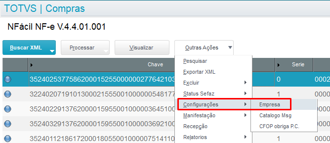
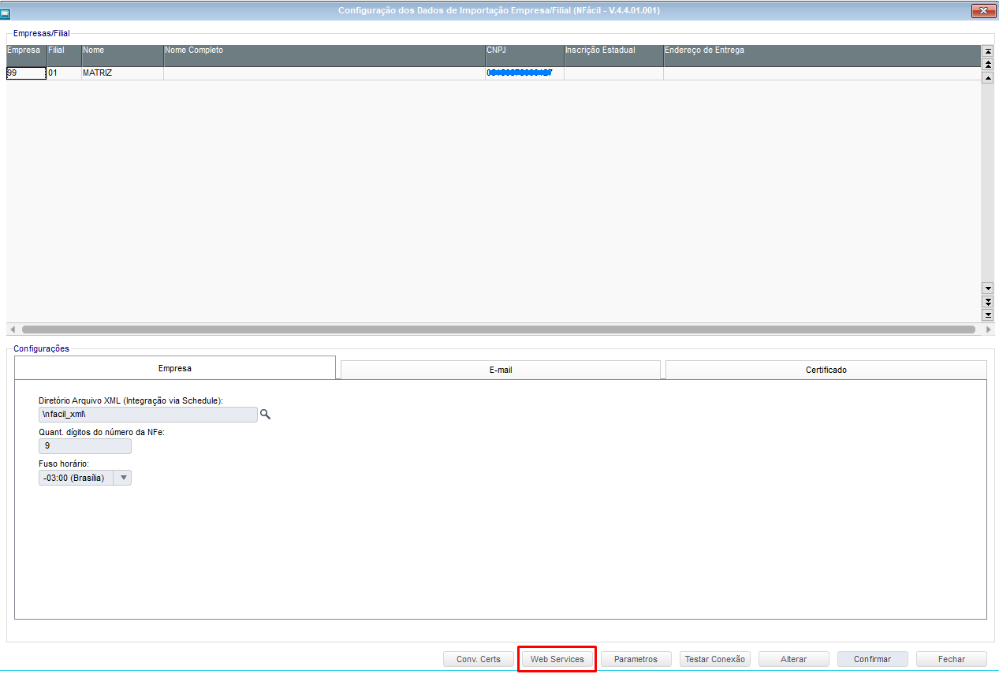
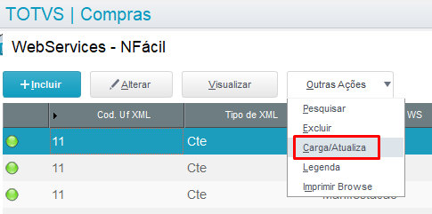

Para que os endereços (URL) dos Serviços Web da Sefaz para NFe e CTe sejam atualizados é necessário que seja realizado o procedimento abaixo:
- Acesse o caminho:
NFacil > Outras Ações > Configurações > Empresa

- Acesse o botão "Web Services":

- Em seguida acesse o caminho:
Outras Ações > Carga/Atualiza
